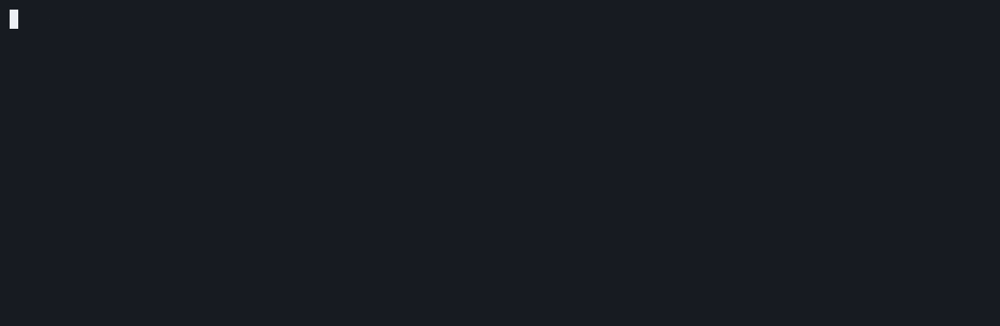

Single Post, Audio & Articles
Detects photos, videos, audio tracks, and articles automatically, with explicit --as photo|video|article and --photos or --folder overrides.
linkget 'URL' --as article --photos
Linkget resolves social links and articles on your own Mac, checks media completeness with ffprobe, and keeps staged copies until Apple Photos imports are verified byte-for-byte.
brew install Popcornnnnnnnn/tap/linkget
Pick a real workflow and switch destination or save type to see the exact CLI invocation, inspect summary, and output layout.
linkget 'https://x.com/USER/article/ID' --photosRenders the X Article locally inside a network-disabled Chromium window and imports a high-resolution PNG into Apple Photos.
Recorded from real runs saving a five-second Vimeo clip and archiving a web page offline.
Downloads Blender's Big Buck Bunny test clip via yt-dlp, verifies streams with ffprobe, and saves a standalone MP4.

Extracts article content, downloads embedded media into local assets/, and writes article.md alongside standalone article.html.
Use the same local engine from your shell, through the bundled two-command Raycast extension, or inside AI coding agents over stdio MCP.
Built so temporary downloads never vanish mid-failure and browser sessions stay on your disk.
Media is staged under ~/Library/Application Support/linkget/ and verified inside the managed Apple Photos library byte-for-byte before staging files are deleted.
Pass --photos or set linkget config --x-article-photos to archive an X Article or promoted long post as a high-resolution PNG into Photos using a network-disabled browser pass.
Unfinished downloads reuse verified staged media under linkget retry while keeping original --photos or --folder targets intact, and clean defaults to preview unless --apply is set.
Linkget has no hosted backend or analytics. Saved session cookies and receipts remain readable only by your user account, or pass --browser none to disable browser reads completely.
Single-post resolvers, article archivers, and audio extractors verified in Linkget v0.4.0. Filter by what you want to save.
| Site | Supported Media | Tier | Notes |
|---|---|---|---|
| Photos, videos, Reels | Stable | Completeness check counts source photos and videos across carousels and Reels. | |
| X / Twitter | Photos, videos, X Articles | Stable | Detects Articles on /status/ID & /article/ID; saves Markdown/HTML folder or renders PNG via --photos. |
| WeChat / Toutiao / Zhihu / Web | Offline articles | Stable | Writes article.md, standalone article.html, content.json, and assets/; pass --no-assets to skip media. |
| Bilibili | Video (BV/av), Opus, Audio (au) | Stable | Optional browser login unlocks higher streams; handles one part or audio track per URL. |
| TikTok | Photo posts, videos | Stable | Supports short share links. |
| Douyin | Photo posts, Live Photos, videos | Stable | Ranks clean playback streams, pairs still + motion into Live Photos, supports BrowserOS neo / Chrome fallback. |
| Xiaohongshu | Image sets, videos | Trial | Keep full URL including xsec_token query parameters; checkpoints multi-image posts on retry. |
| Photos, videos | Stable | Heuristic selection prefers watermark-free JPEG originals when available. | |
| YouTube / YouTube Music | Single videos, Shorts, Music tracks | Stable | Playlist-only URLs and live streams excluded; music.youtube.com defaults to audio extraction. |
| Vimeo | Public embeddable videos | Development | Accepts vimeo.com/ID and player.vimeo.com/video/ID. |
| Dailymotion | Single videos | Development | Accepts dailymotion.com/video/ID and dai.ly/ID. |
| SoundCloud | Single tracks | Stable | Public tracks and on.soundcloud.com shares; sets excluded. |
| Bandcamp | Single tracks | Stable | Public /track/ links with metadata tags; full albums excluded. |
| Photos, galleries, videos | Trial | Handled through gallery-dl. | |
| Kuaishou | /short-video/ videos | Trial | Prefers HEVC streams at equal resolution. |
| LOFTER | Photos, videos | Trial | Handled through gallery-dl. |
| Pixiv | Static artworks | Trial | Static artworks; Ugoira and collections excluded. |
| Pins, boards | Trial | Handled through gallery-dl. |
Video mode can also attempt additional sites supported by your installed yt-dlp. See the repository README for the full compatibility reference.
One Homebrew command installs Python, gallery-dl, yt-dlp, ffmpeg, and deno. Set your default Photos and Obsidian paths once, then connect Raycast or MCP if needed.